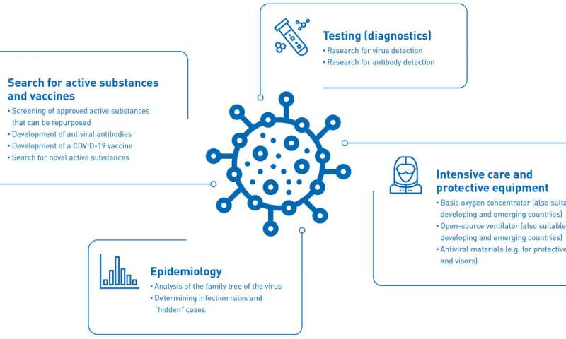
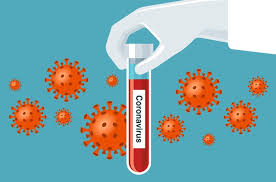

Coronaviruses are a large family of viruses which may cause illness in animals or humans. In humans, several coronaviruses are known to cause respiratory infections ranging from the common cold to more severe diseases such as Middle East Respiratory Syndrome (MERS) and Severe Acute Respiratory Syndrome (SARS). The most recently discovered coronavirus causes coronavirus disease COVID-19.
COVID-19 is the infectious disease caused by the most recently discovered coronavirus. This new virus and disease were unknown before the outbreak began in Wuhan, China, in December 2019. COVID-19 is now a pandemic affecting many countries globally.
A COVID-19 vaccine is a hypothetical vaccine against coronavirus disease 2019 (COVID‑19). Although no vaccine has completed clinical trials, there are multiple efforts in progress to develop such a vaccine. In February 2020, the World Health Organization (WHO) said it did not expect a vaccine against severe acute respiratory syndrome coronavirus 2 (SARS-CoV-2), the causative virus, to become available in less than 18 months. Previous attempts to develop a vaccine against the coronavirus diseases, SARS and MERS, established considerable knowledge about the structure and function of coronaviruses – which accelerated rapid development during early 2020 of varied technology platforms for a COVID-19 vaccine – but all the previous coronavirus vaccine candidates failed in early-stage clinical trials, with none being advanced to licensing.
The Coalition for Epidemic Preparedness Innovations (CEPI) – which is organizing a US$2 billion worldwide fund for rapid investment and development of vaccine candidates – indicated in April that a vaccine may be available under emergency use protocols in less than 12 months or by early 2021. On 4 May 2020, the WHO organized a telethon which received US$8.1 billion in pledges from forty countries to support rapid development of vaccines to prevent COVID-19 infections, also announcing deployment of an international "Solidarity trial" for simultaneous evaluation of several vaccine candidates reaching Phase II-III clinical trials.
By June 2020, 159 vaccine candidates were in development, with two in Phase II efficacy and dose-testing studies in human subjects, five in Phase I–II safety and efficacy trials, and four in Phase I trials.
After a novel coronavirus pneumonia was detected in December 2019, the genetic sequence of COVID-19 was published on 11 January 2020, triggering an urgent international response to prepare for the outbreak and hasten development of a preventative vaccine. The rapidly growing infection rate of COVID-19 worldwide during early 2020 stimulated international alliances and government efforts to urgently organize resources to make multiple vaccines on shortened timelines, with four vaccine candidates entering human evaluation in March.
A vaccine for an infectious disease has never before been produced in less than several years, and no vaccine exists for preventing a coronavirus infection. As of April, CEPI estimates that as many as six of the 115 vaccine candidates against COVID-19 should be chosen by international coalitions for development through Phase II–III trials, and three should be streamlined through regulatory and quality assurance for eventual licensing at a total cost of at least US$2 billion. Another analysis estimates 10 candidates will need simultaneous initial development, before a select few are chosen for the final path to licensing.
The vaccine effort is being prioritized for speed of rigorous clinical evaluation for safety and efficacy, financing, and planning to manufacture billions of doses, and eventual worldwide deployment and equitable access among developed and undeveloped countries. WHO, CEPI, and the Gates Foundation are committing money and organizational resources for the prospect that several vaccines will be needed to prevent continuing COVID-19 infection. The vaccines will require custom formulation, special packaging, transportation, and storage in all 200 countries with infected citizens. The WHO estimates a total cost of US$8 billion to develop a suite of three or more vaccines having different technologies and distribution to prevent COVID-19 infections worldwide.
Industry analysis of past vaccine development shows failure rates of 84-90%. Because COVID‑19 is a novel virus target with properties still being discovered and requiring innovative vaccine technologies and development strategies, the risks associated with developing a successful vaccine across all steps of preclinical and clinical research are high.
To assess potential for vaccine efficacy, unprecedented computer simulations and new COVID‑19-specific animal models are being developed multinationally during 2020, but these methods remain untested by unknown characteristics of the COVID‑19 virus. Of the confirmed active vaccine candidates, about 70% are being developed by private companies, with the remaining projects under development by academic, government coalitions, and health organizations.
Most of the vaccine developers are small firms or university research teams with little experience in successful vaccine design and limited capacity for advanced clinical trial costs and manufacturing without partnership by multinational pharmaceutical companies. The general geographic distribution of COVID‑19 vaccine development involves organizations in the United States and Canada, together having about 46% of the world's active vaccine research, compared with 36% in Asian countries, including China, and 18% in Europe. In early April, CEPI scientists said 115 vaccine candidates were in development as either "exploratory/preclinical" projects or in Phase I safety trials in human participants. The table in this section lists emerging vaccine candidates whose Phase I trial starts are scheduled in 2020.
The rapid development and urgency of producing a vaccine for the COVID‑19 pandemic may increase the risks and failure rate of delivering a safe, effective vaccine. One study found that between 2006 and 2015, the success rate of obtaining approval from Phase I to successful Phase III trials was 16.2% for vaccines, and CEPI indicates a potential success rate of only 10% for vaccine candidates in 2020 development.
An April 2020 CEPI report stated: "Strong international coordination and cooperation between vaccine developers, regulators, policymakers, funders, public health bodies and governments will be needed to ensure that promising late-stage vaccine candidates can be manufactured in sufficient quantities and equitably supplied to all affected areas, particularly low-resource regions." However, some 10% of the public perceives vaccines as unsafe and unnecessary, refusing vaccination – a global health threat called vaccine hesitancy – which increases the risk of further viral spread that could lead to COVID-19 outbreaks.